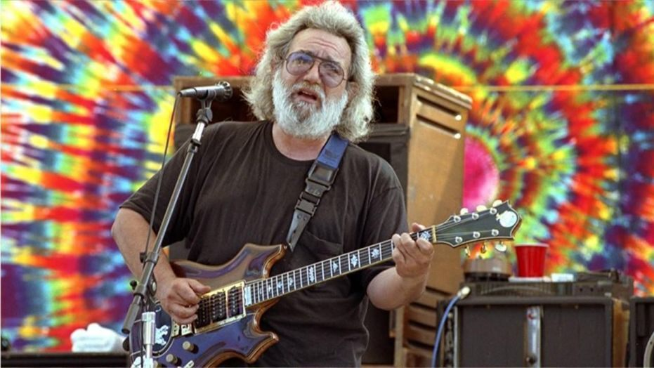

Jerry Garcia was the lead guitar player in the Grateful Dead. He did lots of psychadelic drugs, and was a cool dude. Read more about him here: Jerry wiki
For me, the lame part of the Sixties was the political part, the social part. The real part was the spiritual part.